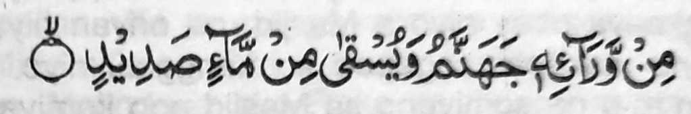

So Abu ‘Amir (Rahmatullahi ‘Alaihi) na pitharo iyan, “Miya-ilay aken a sakatao a oripen a babay a gi-i phasa-an sa tanto a maito a arga. Tanto sekaniyan a mamamansi ago so bok iyan na marezik. Inikapedi aken na piyamasa ko sekaniyan.
Pitharo aken non, ‘Songka si-i, hay babay, ka lomalakao ta ka mamamasa an ta pantag ko Ramadhan.’ Pitharo iyan, ‘Alhamdolillah, so langon o olan-olan na melagi-lagid raken.’ Gi-i sekaniyan mamowasa ko soled o kadaon-dao ago gi-i manambayang ko soled o kagagawi-i.
Kagiya makarani so Eid (Boka), na pitharo aken non, ‘Hay Babay! Phakaonot ka raken mapita ka phamamasa-an ta para sangka-iya Eid.’ Pitharo iyan, ‘Hay Datu Aken! Tanto ka den a mabibira-i sangka-iya doniya.’ Somiyoled sekaniyan ko kowarto niyan na mipho-on zambayang. Pembatiya-an niyan so Surah Ibrahim na kagiya ira-ot sekaniyan ko ika sapolo ago nem a Ayaat angka-iya Surah a kati-i:

“Si-i ko khabolosan niyan so Naraka Jahannam, go phaka-inom ko ig a dana.” (Surah Ibrahim: 16)
a iniropa niyan so kasiksa-an o manga da paratiyaya, na pikhaso-kasoy niyan, na miyaka kisek na ron den miphotos.”